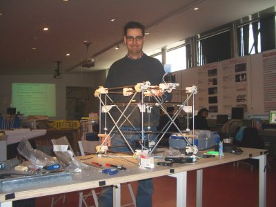
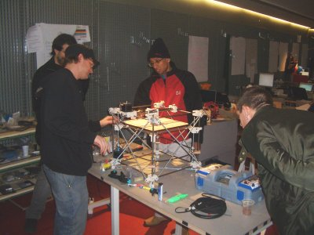
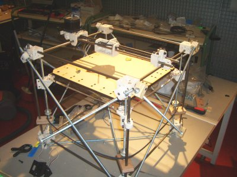

Ayer se recibieron las piezas que faltaban y se continuó con la construcción de la estructura. La máquina está casi lista y con un poco de suerte hoy se empezarán las pruebas de impresión.


En esta foto se ve a Zach Smith y algunos de los participantes en el taller, construyendo la estructura de Reprap. Los hay de todas partes del mundo: uno de India, un portugués, uno de Estados Unidos y hasta una chica de Australia. Todos ellos participando en el montaje de la máquina y esperando ansiosos verla en acción🙂



En estas fotos se pueden ver algunos detalles. Están tomadas cuando todavía la Reprap no está completa. Falta por añadir uno de los motores. Pero viendo estas fotos, uno se puede hacer una idea del aspecto de este artefacto.
Yo mientras tanto, tengo que modelar la otra pieza de los módulos Y1: el cuerpo.
ya se lo que quieres hacer: imprimir muchas réplicas de gusanos constructores de impresoras…. y así sucesivamente 🙂
😀
De momento, mi primer objetivo es conseguir imprimir una pieza. Luego, ¡La imaginación al poder!